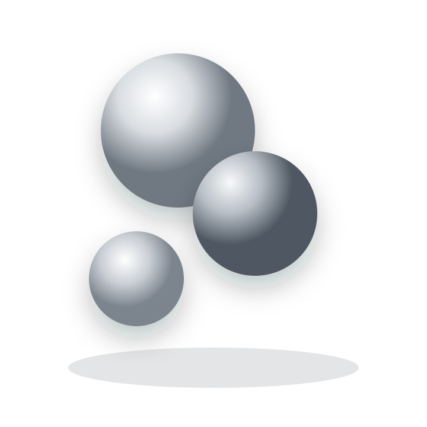
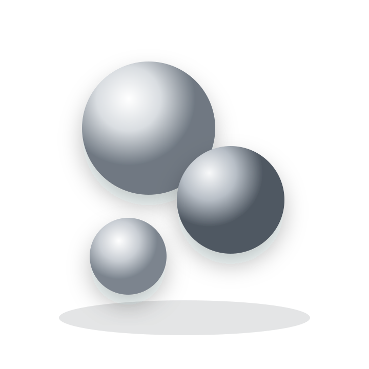

Выбирайте первый отклик
Не анализируйте каждый вопрос слишком долго.
Психологический тест
Тест помогает увидеть не набор черт и не диагноз, а привычный способ справляться с тревогой, близостью, ответственностью и неопределенностью.
Результат формирует гипотезу о ведущей стратегии и не заменяет профессиональную диагностику.


Перед началом
Не анализируйте каждый вопрос слишком долго.
Ориентируйтесь на то, как вы реагируете чаще всего.
У каждой стратегии есть защитная функция, ресурс и цена.
Можно использовать клавиши 1-4.
Обработка результата
Сопоставляем ответы, считаем выраженность стратегий и определяем ведущий механизм адаптации.
Ведущая стратегия
Подробная интерпретация

Следующий шаг
На консультации мы разбираем, какое чувство запускает стратегию, чего она пытается добиться и как постепенно вернуть выбор взрослой части личности.
Что изменится в моей жизни, если эта стратегия перестанет принимать решения вместо меня?
Текущие ответы будут удалены.